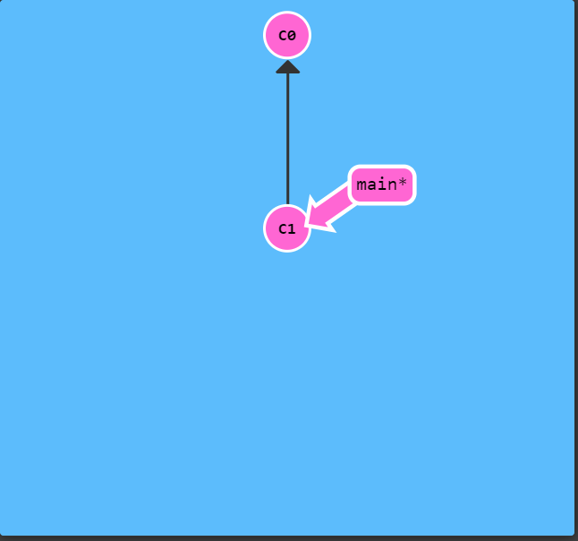
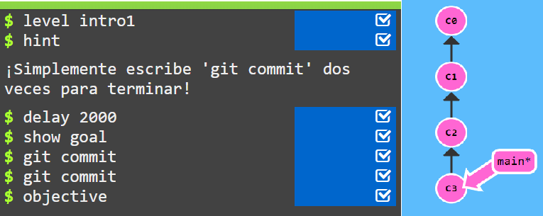

Lo primero de todo es entender que es un commit en un repositorio. Un commit en un repositorio git registra un snapshot de todos los archivos en tu directorio.Git solo comprime un commit como un conjunto de cambios.Ademas git es muy util ya que mantiene un historial de todos los commits que se han hecho y en que momento , esto es muy util cuando hay muchos trajadores trabajando en un mismo proyecto

En esta imagen vemos dos commits el inicial que es C0 y C1 que es el siguiente al anterior, el cual puede tener algun cambio.
Ejercicio 1

Para crear commit hay que escribir en la consola "git commit" El ejercicio pide crear 2 commits por lo que hay que escribir 2 veces "git commit" en la consola para crearlos. Aqui vemos commits que van desde C0 a C3 en este ultimo puede haber cambios desde los anteriores